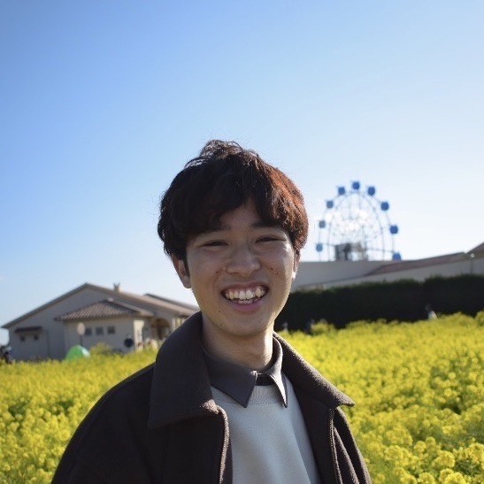
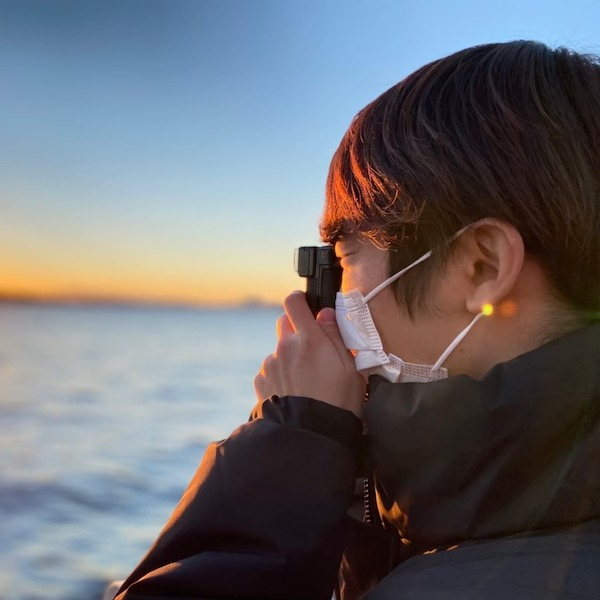
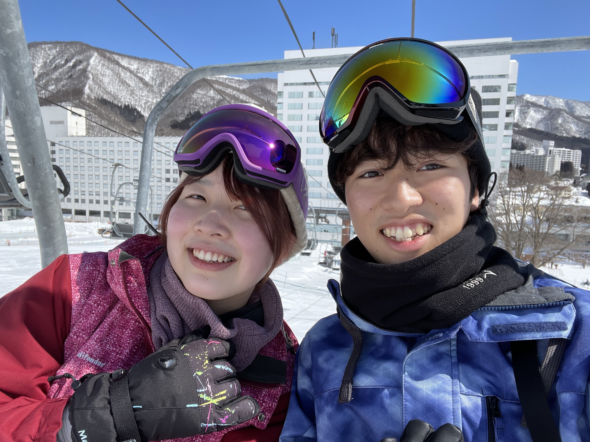
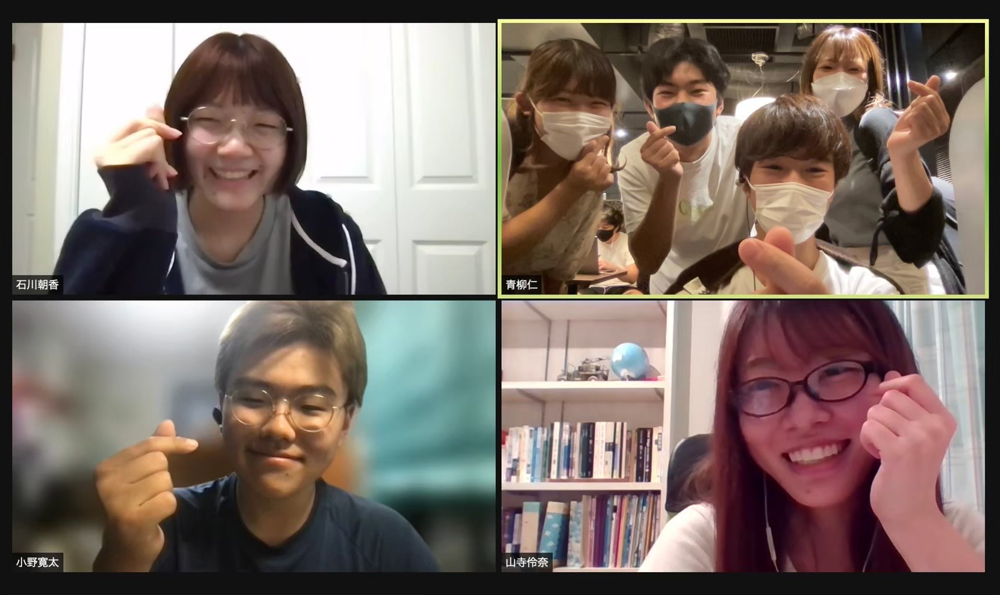
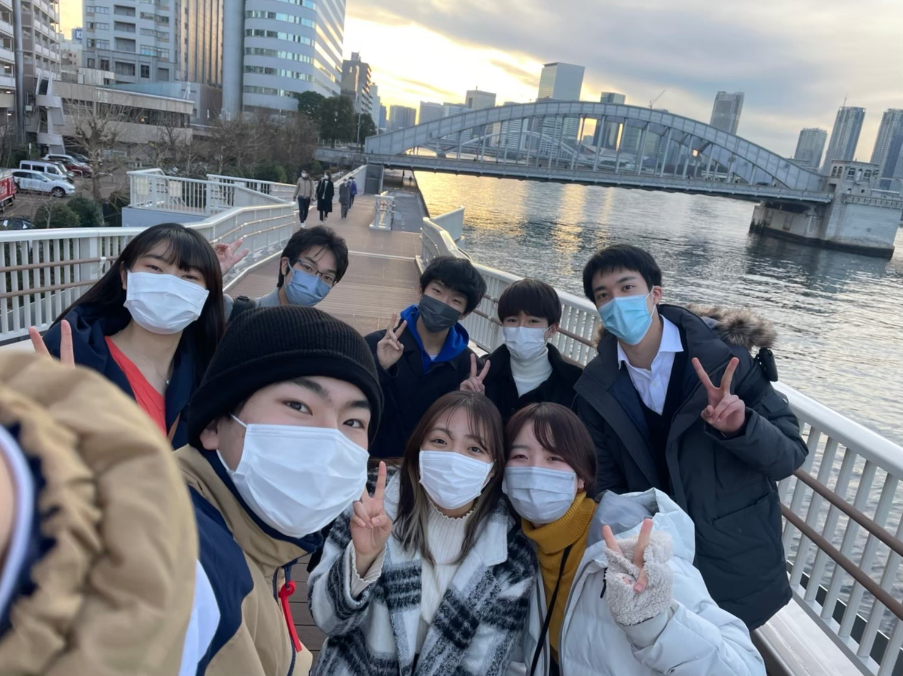

Introduce
自己紹介


青柳仁
- 大学: 慶應義塾大学理工学部1年🖋
- 出身地: 山口県下関市🐳
- サークル: シャンソン研究会🥁
- 好きな食べ物: カレーライス🍛
Why
だから私はPOSSE
だから私はPOSSE
とにかくみんなから良い刺激を受けられる！みんなそれぞれ尊敬できる所があって、そんな素敵なメンバーに囲まれて好きなプログラミングを勉強できるコミュニティなんて他にない！って思います。
みんな行動力がすごいから一緒に頑張ろうって励みになるし、自分が何かみんなのためにできることを見つけようって思える、そんな場所です。
Memory
思い出


